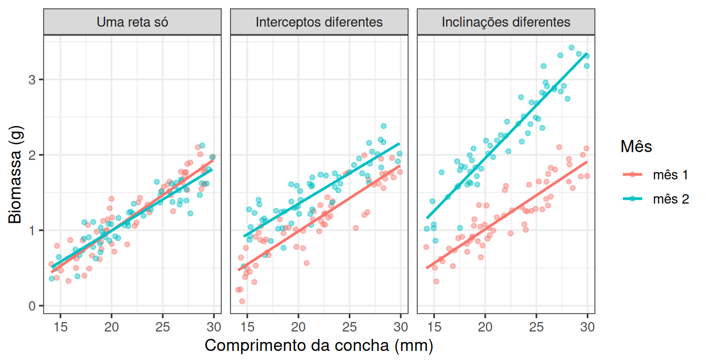

library(tidyverse)
theme_set(theme_bw(base_size = 12))Do delineamento à conclusão
Prática em R 10
1 Objetivo desta prática
As leituras das duas últimas semanas (retas paralelas e tratamento e covariável) mostraram que duas retas só podem se relacionar de três maneiras, e que as três cabem em uma única equação com quatro coeficientes.
Nesta última prática você vai construir as três situações, escolhendo os parâmetros que produzem cada uma. Depois vai gerar uma delas sem dizer qual, e verificar se a comparação entre modelos consegue recuperar o cenário que você construiu. Só então aplica tudo isso a dados reais de lulas, com um par de meses escolhido por você.
O objetivo em R é escrever um gerador com dois parâmetros de interesse, comparar modelos aninhados com anova() e transformar previsões de volta para a escala original.
2 Preparação
Crie um script pr-ancova.R com o cabeçalho de identificação e comece por:
3 Um gerador para os três cenários
Dois meses de coleta, moluscos medidos em comprimento e biomassa. A relação entre eles é uma reta em cada mês, e a diferença entre os meses cabe em dois números, quanto o segundo mês se desloca verticalmente e quanto a sua inclinação difere.
gerar_dois_meses <- function(delta_intercepto, delta_inclinacao, n = 60, sigma = 0.2) {
tibble(
mes = factor(rep(c("mês 1", "mês 2"), each = n), levels = c("mês 1", "mês 2")),
comprimento = runif(2 * n, min = 14, max = 30)
) |>
mutate(
biomassa = -0.8 + 0.09 * comprimento +
if_else(mes == "mês 2", delta_intercepto, 0) +
if_else(mes == "mês 2", delta_inclinacao * comprimento, 0) +
rnorm(n(), mean = 0, sd = sigma)
)
}A função reaproveita a reta da Prática 09 e acrescenta os dois desvios do segundo mês. Agora os três cenários da Figura 1 são três combinações desses dois números:
cenarios <- bind_rows(
gerar_dois_meses(0, 0) |> mutate(cenario = "Uma reta só"),
gerar_dois_meses(0.35, 0) |> mutate(cenario = "Interceptos diferentes"),
gerar_dois_meses(0, 0.05) |> mutate(cenario = "Inclinações diferentes")
) |>
mutate(cenario = fct_relevel(cenario, "Uma reta só", "Interceptos diferentes"))
ggplot(cenarios, aes(x = comprimento, y = biomassa, colour = mes)) +
geom_point(alpha = 0.45, size = 1.3) +
geom_smooth(method = "lm", se = FALSE, linewidth = 0.9) +
facet_wrap(~ cenario) +
labs(x = "Comprimento da concha (mm)", y = "Biomassa (g)", colour = "Mês")
4 Os dois modelos, e o que os separa
Na fórmula, + supõe uma inclinação só para os dois meses, enquanto * permite que cada mês tenha a sua. Vamos ajustar os dois a um dos cenários e compará-los:
dados_c <- gerar_dois_meses(0, 0.05)
aditivo <- lm(biomassa ~ comprimento + mes, data = dados_c)
com_interacao <- lm(biomassa ~ comprimento * mes, data = dados_c)
anova(aditivo, com_interacao)Analysis of Variance Table
Model 1: biomassa ~ comprimento + mes
Model 2: biomassa ~ comprimento * mes
Res.Df RSS Df Sum of Sq F Pr(>F)
1 117 5.2316
2 116 4.0157 1 1.2159 35.122 3.25e-08 ***
---
Signif. codes: 0 '***' 0.001 '**' 0.01 '*' 0.05 '.' 0.1 ' ' 1A tabela testa se permitir uma segunda inclinação reduz a variação residual mais do que se esperaria por acaso. Um valor de p pequeno indica que o modelo aditivo é simples demais para estes dados, e um valor grande indica que ficamos com ele, que é mais fácil de interpretar.
5 Sua vez, parte 1: um cenário às cegas
6 Sua vez, parte 2: lulas, dados reais
Uma série de coletas de lulas registrou, para cada indivíduo, o comprimento do manto (DML, em mm) e o peso dos testículos (Testisweight, em gramas). A pergunta biológica é sobre maturação. Os machos de um mês têm testículos mais pesados do que os de outro?
url <- "https://raw.githubusercontent.com/FCopf/datasets/refs/heads/main/zuur-2009-data-sets/Squid.txt"
lulas <- read_tsv(url, show_col_types = FALSE)
lulas |> count(MONTH)# A tibble: 12 × 2
MONTH n
<dbl> <int>
1 1 45
2 2 34
3 3 75
4 4 46
5 5 38
6 6 38
7 7 37
8 8 52
9 9 134
10 10 134
11 11 88
12 12 47Antes de qualquer modelo, a verificação obrigatória de uma comparação por covariável:
dois_meses |>
group_by(mes) |>
summarise(n = n(), minimo = min(DML), maximo = max(DML))Desenhe os pontos com uma reta por mês, ajuste os dois modelos e compare-os com anova(), exatamente como você fez com os dados simulados. Depois escolha dois ou três comprimentos dentro da faixa comum e obtenha as previsões:
comprimentos <- c(____, ____) # dentro da faixa comum
novos <- tibble(
DML = rep(comprimentos, each = 2),
mes = factor(rep(levels(dois_meses$mes), times = length(comprimentos)),
levels = levels(dois_meses$mes))
)
novos |>
mutate(previsto_log = predict(modelo_escolhido, newdata = novos),
previsto_g = exp(previsto_log))exp() desfaz o logaritmo e devolve o peso previsto em gramas, que é a escala em que a conclusão precisa ser escrita.
7 Entrega
Salve o script pr-ancova.R com o cabeçalho preenchido. Antes de enviar, reinicie o R (Session → Restart R) e execute o script inteiro uma vez. As respostas escritas vão no próprio script, como comentários iniciados por #.